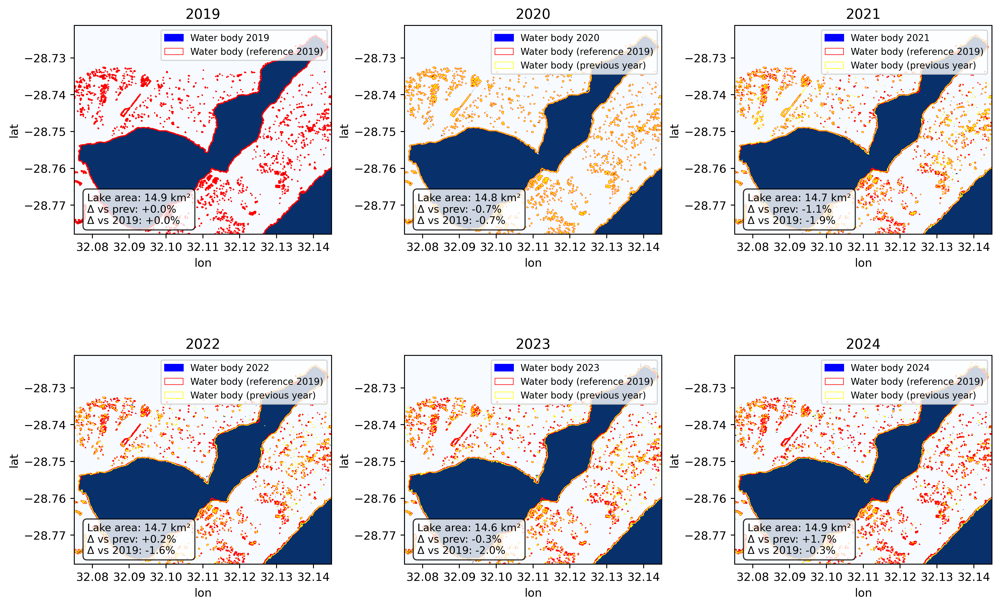

My Projects
Project 1: Water Body Visualization and Streamflow Delineation

In this project, I used Google Earth Engine and ArcMap to visualize the major water bodies in Richards Bay, including Mzingazi Dam. I imported a Digital Elevation Model (DEM) to delineate the streamflow and drainage patterns around the lake. This helped in understanding how surface water moves in the area and how runoff from nearby industrial sites may contribute to pollution in the lake.
Project 2:Mzingazi Catchment Analysis – Richards Bay, South Africa

This project focused on analyzing the Mzingazi Lake catchment using ArcGIS Proand a Digital Elevation Model (DEM) downloaded from Google Earth Engine. The study involved delineating stream flows and examining elevation patterns around Mzingazi Lake to understand surface water movement using 3D visualisation in ArcGIS Pro.
Project 3: Monitoring Surface Area, SPM, and Chlorophyll
In this project, I used the Google Earth Engine API with Sentinel-2 satellite imagery to monitor seasonal changes in the surface area of the lake. I also analyzed variations in Suspended Particulate Matter (SPM) and Chlorophyll-a concentrations as indicators of water pollution and algal growth. These results were exported and visualized in ArcGIS Pro to better understand the spatial distribution of pollutants across the lake.
Project 4: Suspended Particulate Matter (SPM) Mapping

This project focused on mapping Suspended Particulate Matter using Sentinel-2 imagery processed in Google Earth Engine. The seasonal SPM maps helped identify hotspot areas with high sedimentation, often influenced by rainfall, industrial runoff, or soil erosion around the lake.
Project 5: Chlorophyll-a Concentration Maps

I generated seasonal maps of Chlorophyll-a concentration to monitor nutrient levels and the potential for algal blooms in Mzingazi Lake. This analysis was done using Google Earth Engine and provides insight into how pollution and eutrophication evolve over time due to human activity.
Project 6: Catchment delineation Map

This map illustrates the catchment delineation for the selected area in KwaZulu-Natal, Checking how white and black mfolozi river intersect. Using a Digital Elevation Model (DEM) in ArcGIS Pro, the catchment boundaries were extracted and analyzed in relation to the river network. The map also incorporates slope analysis, visualized in a 3D perspective, to highlight the spatial relationship between terrain gradients and river distribution. The visualization demonstrates how slope influences river flow paths and catchment drainage patterns, providing a clear understanding of topographic controls on hydrological processes within the region.
Project 7: Landcover Map

This map presents the Land Use and Land Cover (LULC) distribution for Richards Bay, KwaZulu-Natal, using the 2022 ESRI Land Cover dataset at 10 m resolution. The dataset was processed in ArcGIS Pro to classify and display different land cover types across the study area Field Calculator was applied to quantify the proportion of each land cover class, enabling an analysis of the dominant land use and land cover in Richards Bay. The results highlight the spatial patterns of urban development, vegetation, and water bodies, providing valuable insight into how land resources are utilized within the region.
Project 8: Groundwater and Surface Water Interaction – Richards Bay, South Africa

In this project, I used ArcGIS Pro to interpolate groundwater level data and analyze its spatial relationship with stream flow patterns across Richards Bay. The analysis aimed to understand how groundwater and surface water systems interact and how water is likely to move from one area to another within the catchment
Project 9: Groundwater Level Interpolation and Contour Mapping

This project involved using ArcGIS Pro to interpolate groundwater level data and generate contour maps representing the spatial variation of groundwater across Richards Bay.